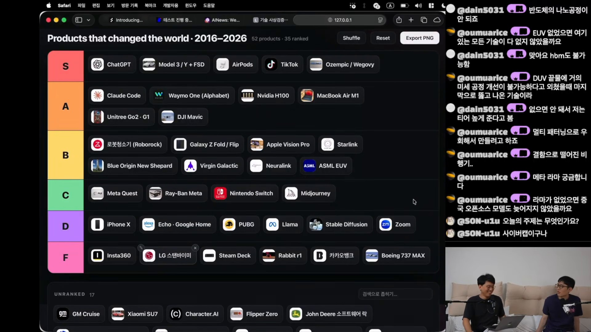
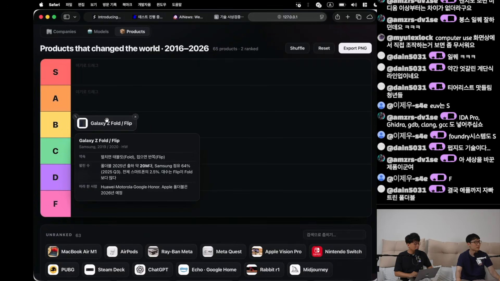
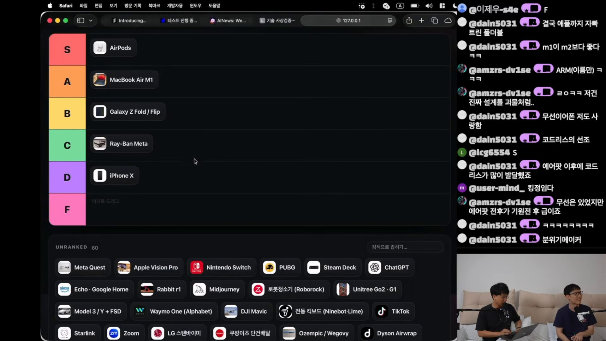
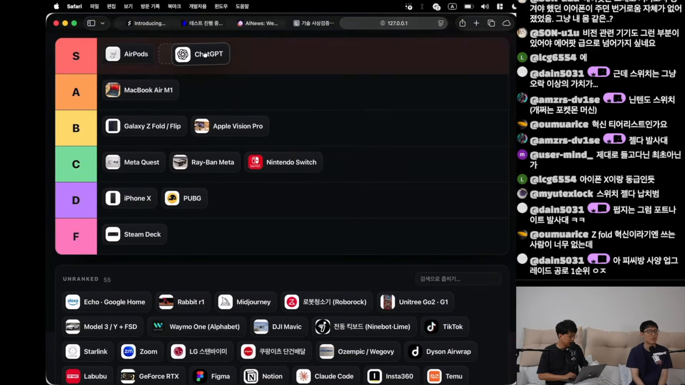
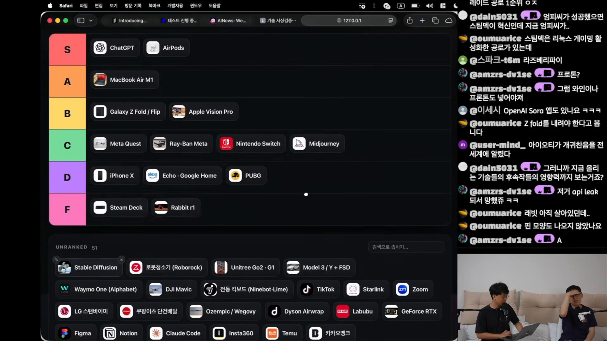
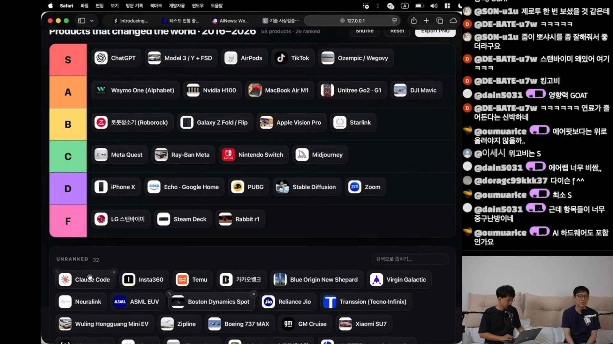
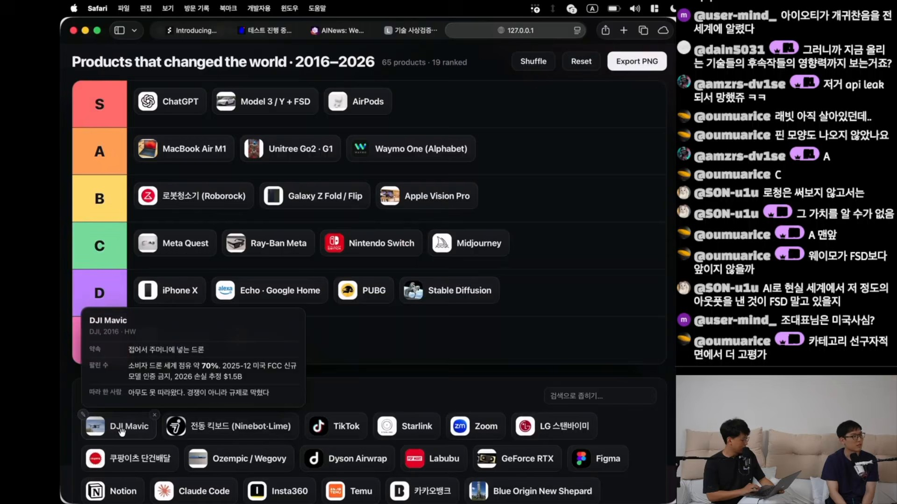
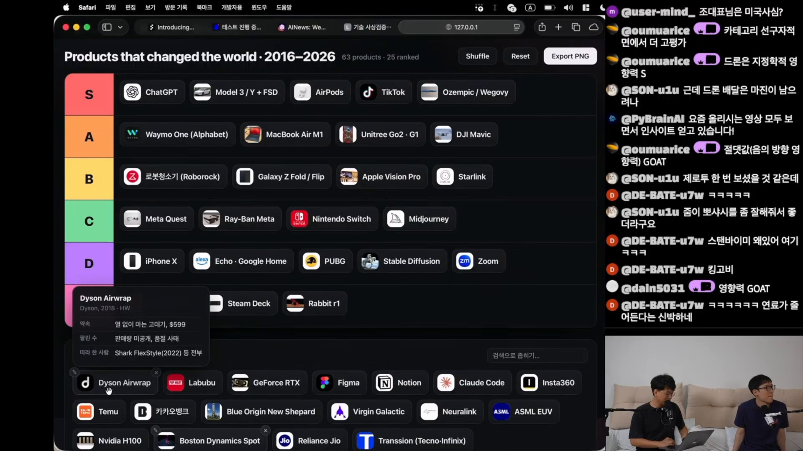
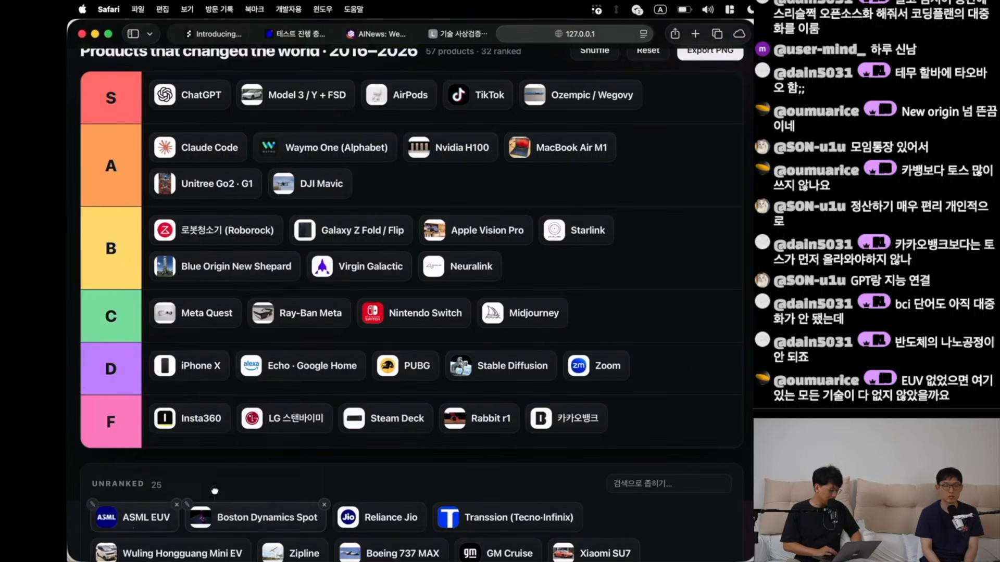
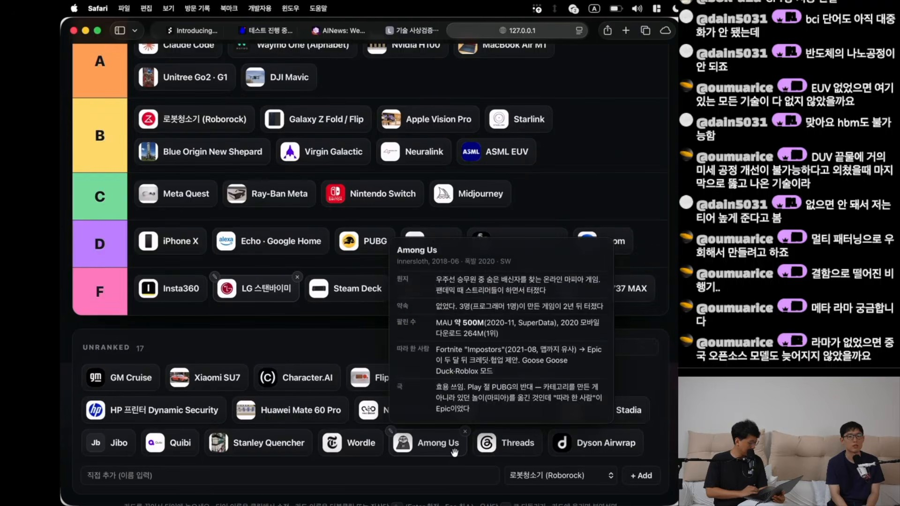

세상을 바꾼 제품은
무엇으로 평가받는가
에어팟은 S, ASML EUV는 B. ChatGPT부터 틱톡, Claude Code까지—지난 10년의 제품을 줄 세우는 동안 드러난 것은 기술의 순위만이 아니라, 혁신을 바라보는 가치관이었다.
새로운 기술을 만들었는가, 사람들의 생활을 바꿨는가, 사업으로 살아남았는가. 같은 제품도 무엇을 먼저 묻느냐에 따라 전혀 다른 등급을 받는다.
순위표보다 흥미로운 판단의 기준
이 영상은 두 진행자가 2016년 이후 출시된 제품을 웹 티어리스트에 배치하는 토론이다. 최종 S 티어에는 ChatGPT, 테슬라 Model 3/Y + FSD, 에어팟, 틱톡, Ozempic/Wegovy가 오른다. 소비자 기기와 AI 서비스, 반도체 장비, 의약품까지 한 보드에 놓이면서 ‘IT 제품’의 경계도 넓어진다.
토론의 중심에는 혁신성과 실제 영향력이 있다. 그러나 수익성, 개방성, 사회적 해악, 기반 기술의 기여도가 개입하면서 기준은 흔들린다. 이 글은 제공된 노트의 화면 판독과 자막 기록을 바탕으로, 최종 배치와 그 배치를 만든 논리를 구분해 읽는다. 독립적인 제품 성능 평가나 시장 통계 검증을 수행한 보고서는 아니다.
이 티어리스트를 읽는 세 가지 열쇠
완성도보다 생활의 변화
에어팟과 ChatGPT의 S 배치는 일상의 사용 방식이 달라졌다는 판단에 가깝다. 개별 기능의 개선보다 새로운 시장과 습관을 만든 힘이 강조된다.
영향력은 선함과 다르다
틱톡의 부정적 영향은 S 등급과 공존한다. 이 보드에서 높은 등급은 사회적 권장이나 윤리적 지지를 뜻하지 않는다.
기반 기술의 가치는 논쟁적이다
H100은 AI 생태계의 상징으로 A에, EUV는 긴 논쟁 끝에 B에 놓인다. 최종 제품의 영향력을 그 기반 기술에 얼마나 돌릴지가 쟁점이다.
35개 배치, 17개 미배치
마지막으로 확인된 화면의 카운터는 52 products · 35 ranked다. 시작 화면의 후보 65개에서 13개가 줄었고, 남은 52개 중 35개에 등급이 매겨졌다. 따라서 ‘52개 제품 모두의 최종 순위’로 읽으면 안 된다.
- ChatGPT
- Model 3 / Y + FSD
- AirPods
- TikTok
- Ozempic / Wegovy
- Claude Code
- Waymo One (Alphabet)
- Nvidia H100
- MacBook Air M1
- Unitree Go2 · G1
- DJI Mavic
- 로봇청소기 (Roborock)
- Galaxy Z Fold / Flip
- Apple Vision Pro
- Starlink
- Blue Origin New Shepard
- Virgin Galactic
- Neuralink
- ASML EUV
- Meta Quest
- Ray-Ban Meta
- Nintendo Switch
- Midjourney
- iPhone X
- Echo / Google Home
- PUBG
- Llama
- Stable Diffusion
- Zoom
- Insta360
- LG 스탠바이미
- Steam Deck
- Rabbit r1
- 카카오뱅크
- Boeing 737 MAX
제공된 노트의 최종 화면 판독 기준. 노트에 명시된 A 6개·D 6개 및 총 35개 집계에 맞춰 Unitree Go2·G1과 Echo·Google Home은 각각 하나의 묶음으로 표기했다. 등급은 진행자들의 의견이며 업계 합의가 아니다.

즉흥 토론 아래에는 데이터 카드가 있다
이 영상은 모델 편, AGI를 가져올 회사들 편에 이은 시리즈의 세 번째 편이다. 이번에는 그 회사들이 만든 제품으로 시선을 옮긴다. 범위는 2016년 이후 약 10년. 시작부터 정교한 채점표를 고정하지는 않지만, 제품별 자료는 미리 준비돼 있다.
초반 화면에는 Safari에서 연 로컬 웹앱이 보인다. 주소창은 127.0.0.1, 상단 탭은 Companies·Models·Products, 보드 제목은 “Products that changed the world · 2016–2026”다. 제품 카드는 이름과 출시 연도에 더해 세 가지 질문을 담는다.
새로운 폼팩터, 사용 경험, 해결하려던 문제.
판매량, 이용자 수, 시장 점유율로 드러나는 보급.
경쟁자의 진입과 모방에서 읽는 산업의 변화.

“어떤 기술적인 혁신성, 새로운 무언가를 만들어냈는가. 그리고 그게 진짜로 임팩트를 내서 사람들에게 얼마나 많이 영향을 끼쳤는가.”
제공된 자막 기록 · 00:09:15 · 평가 기준을 설명하는 발언
이 발언을 정리하면 혁신성 × 영향력이다. 다만 실제 계산식이나 배점은 없다. 토론이 이어지며 수익성과 사용 경험이 추가되고, 개방성과 사회적 피해에 관한 가치 판단도 끼어든다.
경계도 유동적이다. “제품을 만들기 위한 제품”이라는 이유로 PyTorch 같은 프레임워크는 제외하지만, H100과 ASML EUV는 평가한다. 소비자가 직접 만지는 제품과 다른 기술을 가능하게 하는 기반 장비가 같은 척도에 놓이면서 뒤의 논쟁이 시작된다.
등급을 갈라놓은 네 가지 논쟁
에어팟과 ChatGPT: 생활이 바뀌었다는 확신
초반 S 자리를 차지하는 제품은 에어팟이다. 이유는 “제 편견을 깨뜨린 제품”이라는 경험과, 무선 이어폰 시장을 만들었다는 평가다. 반면 iPhone X는 D에 놓인다. “아이폰이 대단한 거지 아이폰 X가 대단할 건 없잖아요”라는 말은 제품군 전체의 성취와 특정 세대의 기여를 구분하겠다는 뜻으로 읽힌다.
ChatGPT에는 빠르게 합의가 모인다. “전 세계 사람들의 생활상을 바꾸고 있다”는 발언은 기능의 우열보다 사용의 확산을 겨냥한다. 이 보드에서 S는 기술적으로 가장 정교한 제품이라는 뜻보다, 사람들이 이전과 다르게 행동하게 만든 제품이라는 의미에 가깝다.


M1의 A, 비전 프로의 B가 보여주는 간극
M1에는 ARM 기반 컴퓨팅의 전환을 이끌었다는 의미가 부여된다. 팬 소음과 배터리 사용 시간에 대한 체감이 근거로 등장하고, ARM의 명령어 집합과 애플의 실제 구현을 구분하는 대화가 뒤따른다. 다만 ARM 데스크톱·서버의 시대를 열었다는 인과적 평가는 진행자의 주장이다.
비전 프로와 폴더블은 새로운 폼팩터로 인정받지만 B에 머문다. 비전 프로의 경우 무게와 가격이 실제 사용을 제한한다는 평가다. 이후 세대에서 가벼워지면 재평가할 여지를 남긴다. 새로움이 곧 보급을 뜻하지는 않는다.
개방의 기여와 사업의 성과는 어떻게 비교할까
Midjourney는 C, Stable Diffusion과 Llama는 D다. 자막에서 반복되는 구분은 개방형 생태계의 기여와 사업적 성과 사이에 있다. 연구와 창작의 기반을 제공했다는 점은 인정하면서도, 돈을 버는 모델을 만들었는지를 묻는다.
이는 기술적 성능 비교라기보다 지속 가능한 사업을 제품 성공의 일부로 보는 가치관이다. 노트가 전하는 Stable Diffusion 관련 회사의 실패 발언 역시 토론 속 평가이며, 이 글에서 기업의 재무 상태나 존속 여부를 확인한 것은 아니다.

Claude Code는 A의 맨 앞, H100은 생태계의 상징
Claude Code에는 “챗지피티 다음”, “에이 탑 정도”라는 평가가 붙고, 최종적으로 A 행의 맨 앞에 놓인다. H100은 개별 칩의 사양보다 CUDA 생태계와 AI 학습·운영을 대표하는 제품으로 취급돼 M1보다 앞에 배치된다.
평가 단위가 넓어지는 순간이다. 하나의 제품 이름에 플랫폼이나 생태계 전체의 영향력을 담으면 높은 평가가 가능해진다. 이 방식은 뒤에서 틱톡을 ‘숏폼 전체’로 읽는 논리와도 맞닿는다.

자율주행의 범위, 숏폼의 해악, 건강의 기대
테슬라 Model 3/Y + FSD는 S, Waymo One은 A다. 자율주행이라는 기술 범주로 묶자는 의견과, 실제 도시에서 운행하는 서비스의 체감이 다르다는 의견이 맞선다. 정리 과정에서는 “지구 영향력 / 미국 한정 영향력”이라는 대비가 등장한다.
이 배치는 자율주행의 안전성이나 운행 성능을 비교 검증한 결과가 아니다. 토론에서는 제품의 도달 범위와 눈앞에서 확인되는 변화가 서로 다른 근거로 쓰인다. Waymo가 목록에 들어온 계기로는 Claude Code 제품 담당자가 최고의 제품으로 꼽았다는 일화도 언급된다.

틱톡은 플랫폼 하나가 아니라 숏폼이라는 형식으로 평가된다. 릴스와 쇼츠로 이어진 영향, 인간의 시간을 점유하는 규모가 S의 근거다. 동시에 중독성과 인지적 악영향을 비판하는 강한 표현이 나온다. 피해를 끼쳤다는 판단이 영향력을 부정하지는 않는다는 평가 방식이다.
Ozempic/Wegovy에는 건강에 미칠 파급력이 부여되며 S로 올라간다. 체중 감소가 항공사 연료비 절감으로 이어졌다는 이야기도 등장하지만, 발언 자체에 “궤변 같았지만”이라는 단서가 붙는다. 이는 영상의 파급효과 상상으로 읽어야 하며, 검증된 의학·경제적 근거로 사용해서는 안 된다.
“틱톡을 틱톡이라고 보지 말고 숏폼이라고 보죠.”
제공된 자막 기록 · 틱톡 평가 구간 · 단일 제품에서 카테고리 전체로 넓어지는 평가 단위

ASML EUV: 공정의 개선인가, 진보의 병목을 푼 기술인가
가장 긴 논쟁은 소비자가 직접 쓰지 않는 장비에서 발생한다. EUV의 가치를 판단하려면 “얼마나 팔렸는가”만으로는 부족하다. 이 기술이 없었어도 다음 단계의 반도체가 가능했을까라는 반사실적 질문이 필요해진다.
이어지던 미세화의 한 단계
공정 미세화는 원래 진행돼 왔고, EUV는 그 개선에 기여한 기술이라는 주장이다. 독보적인 회사가 있다는 사실만으로 기술 진보 전체의 공로를 돌리기는 어렵다고 본다.
물리적 한계를 넘긴 기반
기존 방식으로는 미세화가 어려워졌으며, EUV가 없으면 그 다음 단계로 갈 수 없었다는 주장이다. 대체하기 어려운 병목을 해결했다는 데 가치를 둔다.

채팅에서는 EUV가 없으면 다른 기술이나 HBM도 불가능했을 것이라는 주장이 인용된다. 이어 중국이 더 많은 전력을 투입해 공정 효율의 열세를 우회할 수 있다는 이야기가 젠슨 황의 발언으로 소개된다. 두 주장 모두 이 자료만으로 기술적 타당성이나 원발언을 확정할 수는 없다.
토론은 우회 가능성을 일부 인정한 채 남는다. 이후 화면에서 EUV는 B 행 마지막에 놓인다. 최종 위치는 확인되지만, 그 배치가 양쪽 논거의 완전한 합의를 의미하지는 않는다.

숫자가 있다는 것과 검증됐다는 것은 다르다
데이터 카드는 가벼운 티어리스트에 구체적인 토론 재료를 제공한다. 다만 아래 내용은 노트가 옮긴 화면 카드의 표기다. 제작자가 입력한 수치와 해석을 재현한 것이며, 이 글에서 원통계를 대조한 결과는 아니다.
| 카드 | 화면에 기록된 내용 | 추가 확인 지점 |
|---|---|---|
| Galaxy Z Fold / Flip 00:01:38 |
Samsung, 2019 / 2020. 폴더블 2025년 출하 약 2,000만 대, 삼성 점유율 64%(2025 Q3), 전체 스마트폰의 2.5%. Flip 판매 대수가 Fold보다 많다고 표기. | 연간·분기 수치의 기간과 시장 분모. Huawei·Motorola·Google·Honor를 후발 사례로, Apple 폴더블을 2026년 예정으로 적은 내용도 카드 작성 시점의 주장이다. |
| DJI Mavic 00:16:39 |
DJI, 2016. 소비자 드론 세계 점유율 약 70%. 2025년 12월 미국 FCC 신규 모델 인증 금지, 2026년 손실 추정 15억 달러라고 표기. | 점유율 원자료, 규제의 정확한 대상·범위, 손실 추정의 작성 주체. “경쟁이 아니라 규제로 막혔다”는 문장은 카드의 해석이다. |
| Dyson Airwrap 00:19:58 |
판매량은 미공개이며 품절 사태가 있었다고 기재. Shark FlexStyle(2022) 등을 후발 사례로 제시. | 품절은 판매량 자체를 뜻하지 않는다. 이 제품은 최종 평가 대상에서 제외됐다. |
| Among Us 00:27:28 |
Innersloth, 2018년 6월 출시·2020년 확산. 3명 팀, 프로그래머 1명. MAU 약 5억 명(2020년 11월, SuperData), 2020년 모바일 다운로드 2억 6,400만 회로 표기. | 이용자 추정치와 다운로드 집계의 원문. Fortnite “Impostors”의 유사성 및 이후 크레딧·협업 제안 경위도 별도 확인이 필요하다. |
Among Us 카드는 평가 기준의 또 다른 면을 보여준다. 새로운 놀이를 발명했다기보다 기존 마피아 게임을 온라인으로 옮겼지만, Epic 같은 대형 기업이 뒤따랐다는 설명이다. 카테고리의 발명과 성공적인 재구성은 다르지만, 둘 다 경쟁자의 행동을 바꿀 수 있다.
제품을 평가하기 전에, 평가의 단위를 정해야 한다
영상 말미에는 제품 평가가 가치관의 문제로 확장된다. 고가 제품이 먼저 등장한 뒤 대중화되는 경로를 어떻게 볼 것인지, 개방과 폐쇄 중 무엇을 중시할 것인지가 논의된다. 테슬라 초기 모델과 우주관광, Midjourney와 Stable Diffusion의 차이가 이런 축으로 다시 읽힌다.
“이 분류를 일차원적으로 S·A·B·C·D에 맵핑하는 게 너무 힘들었다.”
제공된 자막 기록 · 영상 말미의 가치관 논의
-
제품, 카테고리, 생태계를 구분하자
iPhone X는 특정 세대로, 틱톡은 숏폼 전체로, H100은 CUDA 생태계로 평가된다. 비교 단위가 달라지면 순위도 달라진다. 하나의 제품에 어디까지 공로를 돌릴지 먼저 밝힐 필요가 있다.
-
영향력과 바람직함을 따로 기록하자
틱톡의 S는 이 둘을 합치면 생기는 혼란을 보여준다. 얼마나 많은 행동을 바꿨는지와 그 변화가 사회에 이로운지는 별도의 질문이다.
-
사업 성과와 공동의 기여를 함께 보자
수익성은 제품의 지속 가능성을 설명하지만, 연구와 후속 개발에 제공한 가치를 모두 담지는 못한다. 개방형 모델의 성과를 비교하려면 생태계 기여도 별도로 남겨야 한다.
-
현재의 제품과 미래의 가능성을 나누자
비전 프로에는 경량화 이후의 재평가 가능성이, Rabbit r1에는 음성 중심 인터페이스의 가능성이 언급된다. 현재 구현에 대한 등급과 그 방향에 대한 기대는 다른 판단이다.
Unitree의 A 역시 하드웨어만이 아니라 내부 소프트웨어와 AI 개선으로 동작이 발전했다는 설명에 기대고 있다. 이처럼 제품의 변화를 이야기할 때에는 어느 구성 요소가 성과를 만들었다고 보는지까지 드러내야 비교가 선명해진다.
근거와 편집 원칙
이 글은 사용자가 제공한 Obsidian 연구 노트를 편집·재구성했다. 노트는 한국어 수동 자막 1,131개 큐(약 12,250자), YouTube 메타데이터·설명란·27개 챕터, 1080p 영상에서 추출해 육안 확인한 10개 프레임을 근거로 삼았다고 밝힌다. 이 글에서는 해당 조사 절차를 새로 수행하지 않았으며, 제공된 이미지 10개와 기록을 보존했다.
원자료
sudoremove, 「지난 10년 최고의 IT 제품 티어리스트 (에어팟, 비전프로, 챗지피티, 클로드코드) [제품 티어리스트]」
제공된 메타데이터 기준 게시일: 2026년 9월 10일 · 길이: 29분 37초 · 노트 작성일: 2026년 9월 12일. 각 이미지의 타임스탬프는 원본 영상의 해당 지점으로 연결된다.
읽을 때 남겨두어야 할 한계
- 주관적 토론이다. 진행자들은 기준을 토론 중 정하며, 사용하지 않은 제품도 평가한다고 밝힌다. 반대로 사용 경험 부족으로 제외한 항목도 있어 적용이 일관되지는 않는다.
- 일부 등급에는 발언 근거가 없다. 약 00:22:00~00:22:30의 자막 공백이 기록돼 있다. Blue Origin New Shepard, Virgin Galactic, Neuralink, 카카오뱅크, Boeing 737 MAX는 최종 배치가 확인되지만 그 이유를 설명하는 발언은 노트에서 확보하지 못했다.
- 프레임은 변화가 있는 시점을 골랐다. 10개 이미지는 균등 간격 표본이 아니다. 보드 상태가 유의미하게 달라지는 지점을 선별했으므로, 모든 배치 과정을 연속적으로 보여주지는 않는다.
- 화면의 수치와 기술적 발언은 별도 검증 대상이다. 폴더블 시장 수치, DJI 규제·손실 추정, Among Us 이용자 수, EUV와 HBM의 관계, 중국 전력 전략 및 젠슨 황 인용은 원출처 확인이 필요하다.
- 발언자를 임의로 특정하지 않았다. 출연자 실명이 자막·메타데이터에 없다는 노트의 원칙에 따라 인용은 발언 주체를 구분하지 않고 서술했다.
당신의 S 티어는
어떤 변화를 보상하는가
내 생활을 바꾼 제품, 산업을 가능하게 한 기술, 많은 사람에게 이익을 준 서비스. 무엇을 중심에 두느냐에 따라 같은 보드는 전혀 다른 모습을 갖는다. 이 영상의 가장 생산적인 사용법은 순위를 받아들이는 데서 멈추지 않고, 자신의 기준을 한 문장으로 적어보는 것이다.
후속편은 가속과 제동, 개방과 폐쇄, 기술 주권과 시장 위임을 다루는 ‘기술 사상 검증’으로 예고된다. 제품을 줄 세우던 질문이 이제 기술이 향할 방향으로 이어진다.